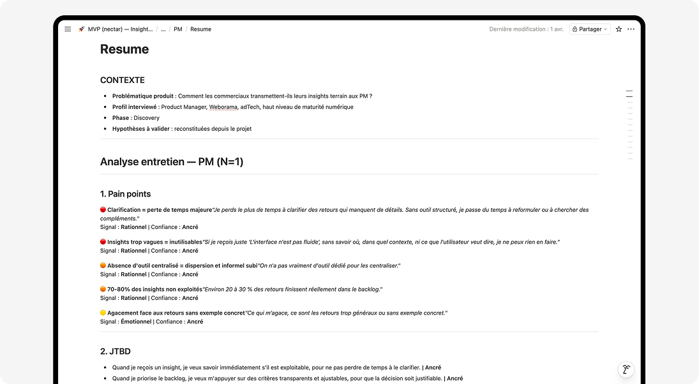

Contexte
Le produit
Nectar est un outil mobile-first B2B permettant aux commerciaux de capturer leurs insights post-RDV en moins d'une minute et de les transmettre directement au backlog produit sous forme de cartes priorisées.
Ce projet poursuit deux objectifs : concevoir un MVP simple avec une priorisation déterministe et transparente, et formaliser un process de conception piloté par IA, réplicable et documenté. Je pilote ce projet seul — de la recherche utilisateur au développement.
01 — Recherche
Entretiens utilisateurs & intégration de l'IA
J'ai mené des entretiens auprès de commerciaux et de Product Managers pour valider les hypothèses et comprendre leurs besoins réels. Dès cette étape, l'IA est intégrée à chaque phase du process.
Les retours sont clairs : les PM veulent des insights accessibles et priorisés, les commerciaux veulent pouvoir les remonter depuis leur mobile après un RDV — sans friction, sans reformulation.
ÉTAPE 01
Claude crée la trame
Guide d'entretien structuré généré par Claude — questions ouvertes, JTBD, frictions identifiées.
ÉTAPE 02
L'IA enregistre & retranscrit
Enregistrement et retranscription automatique de chaque entretien. Une demi-journée de travail économisée par session.
ÉTAPE 03
Claude synthétise
Analyse automatique des pain points, JTBD et opportunités à partir des retranscriptions.
ÉTAPE 04
Notion documente
Création automatique des comptes rendus dans un projet Notion dédié via Claude.
- 4 décisions produit définies : saisie rapide, reformulation IA, scoring par fréquence, mobile-first
- 1 journée de travail économisée par entretien grâce à la retranscription automatique
- Comptes rendus générés automatiquement après chaque session


02 — Définition
Principes de conception & cadrage produit
À partir des entretiens, Claude génère la définition du problème et pose les contraintes de conception. L'objectif : aller vite du besoin utilisateur au produit opérationnel, sans dette de conception.
- 3 champs de saisie maximum — saisie en moins d'une minute
- Mobile-first — conçu pour l'usage post-RDV
- IA frugale — titre normalisé + détection de similarité, aucune décision automatisée
- Scoring transparent — calcul basé sur la fréquence clients, 100% automatique
- 15 edge cases documentés — abandon, échec IA, formulaire incomplet…
Architecture produit : input → insight brut (IA + rules) → normalisation + détection similarité → output PM → backlog priorisé.
IA POUR LA DÉFINITION 01
Structurer le parcours
Parcours utilisateur, choix des inputs/outputs et prompt IA générés par Claude à partir des comptes rendus d'entretien.
IA POUR LA DÉFINITION 02
Décider par la donnée
Formule de scoring, contraintes techniques et règles de matching définies et documentées avec l'aide de Claude.
IA POUR LA DÉFINITION 03
Formaliser & documenter
Zoning des composants, edge cases et compte rendu générés automatiquement pour alimenter la phase d'idéation.
03 — Benchmark
Méthodologie du benchmark
J'explore Mobbin à partir de requêtes générées par Claude pour identifier les patterns pertinents. Je sélectionne les résultats, les documente avec mes recommandations, puis Claude génère un compte rendu dans Notion qui sert de base à la phase d'idéation.
ÉTAPE 01
Claude génère les requêtes
Saisie rapide, catégorisation par chips, feed scannable, badge de priorité, filtres, détection de contenu similaire.
ÉTAPE 02
Sélection dans Mobbin
7 écrans retenus dans un nouveau projet dédié, importés dans Figma pour analyse.
ÉTAPE 03
Documentation des patterns
Fiche de spécification pour chaque pattern : points forts, pertinence pour le MVP, éléments hors scope.
ÉTAPE 04
Claude documente dans Notion
Compte rendu structuré généré automatiquement — 7 patterns documentés, prêts pour l'idéation.
- 7 patterns UX sélectionnés et documentés avec points forts et pertinence
- 1 compte rendu structuré dans Notion, prêt pour la phase d'idéation
04 — Idéation
Prompt à destination de Figma Make
Les prompts sont construits avec Claude et intègrent l'ensemble des décisions précédentes : recherche utilisateur, définition et benchmark. Figma Make génère les écrans pour explorer et itérer rapidement.
- Saisie & backlog — flow liste → saisie → validation, structuration automatique des insights
- Scoring & automatisation — logique basée sur la fréquence, objective et sans effort pour l'utilisateur
- IA suggestive, jamais décisive — suggestions de titre proposées, l'utilisateur confirme ou modifie (pattern Linear)
- 15 edge cases identifiés et documentés
IA POUR L'IDÉATION 01
Contexte
Décisions UX issues des étapes précédentes compilées dans un document structuré.
IA POUR L'IDÉATION 02
Prompt généré par Claude
Prompt v1 intégrant le flow, l'anatomie des écrans, les contraintes de style et les edge cases.
IA POUR L'IDÉATION 03
Écrans générés dans Figma Make
Premières pistes cohérentes produites en quelques minutes, directement exploitables pour itérer.


05 — Design System
Conception du Design System par l'IA
Avant de produire les maquettes finales, j'ai mis en place un Design System pour poser des bases solides pour la conception, l'ajout de nouvelles fonctionnalités et le développement. L'architecture suit les principes de l'Atomic Design.
Via le MCP Claude, les variables et composants sont créés automatiquement dans Figma, et la documentation est générée dans Notion — ce qui réduit significativement le temps de construction du Design System.
- 5 collections de variables — Primitives, Colors, Spacing, Typography, Border
- 13 composants déclinés en 45 variants, avec états et tokens associés
- Documentation auto-générée dans Notion via workflow Claude + Figma MCP
Limite identifiée : certains variants nécessitent encore une intervention manuelle pour les cas les plus complexes.
06 — Développement
De Figma au produit avec Claude Code
J'utilise Claude Code pour couvrir chaque étape du développement — de la configuration Supabase au déploiement Vercel — en respectant le Design System conçu dans Figma.
STACK FRONTEND
TypeScript · Tailwind · Next.js · GitHub
12 composants React conformes au Design System Figma. 5 écrans livrés : Login, Backlog, Saisie, Vérification, Détail.
STACK BACKEND
Supabase · Vercel · Claude API · Gemini Flash
1 endpoint IA : structuration des insights + détection de similarité. Déploiement continu sur Vercel.
DOCUMENTATION
Notion MCP · claude.md réplicable
L'ensemble du process est formalisé dans un fichier claude.md documenté et réplicable sur d'autres projets.
- 12 composants React conformes au Design System Figma
- 5 écrans produits — Login · Backlog · Saisie · Vérification · Détail
- 1 endpoint IA — structuration + détection de similarité
- Process documenté et réplicable — claude.md